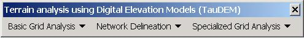

Terrain Analysis Using Digital Elevation Models (TauDEM)
David G. Tarboton
October, 2002
Utah State University
4110 Old Main Hill
Logan, UT 84322-8200
USA
http://www.engineering.usu.edu/dtarb/
email: dtarb@cc.usu.edu
TauDEM (Terrain Analysis Using Digital Elevation Models) is a set of
tools for the analysis of terrain using digital elevation models.
It incorporates programs and digital elevation model (DEM) analysis functions
developed over several years of research. TauDEM is currently packaged
as an extendable component (toolbar plugin) to both ESRI
ArcGIS 8.x and MapWindow,
a basic GIS data viewing tool developed at Utah State University.
Distribution and Copyright
Copyright (C) 2002 David Tarboton, Utah State University
This program is free software; you can redistribute it and/or modify
it under the terms of the GNU General Public License version 2, 1991 as
published by the Free Software Foundation.
This program is distributed in the hope that it will be useful, but
WITHOUT ANY WARRANTY; without even the implied warranty of MERCHANTABILITY
or FITNESS FOR A PARTICULAR PURPOSE. See the GNU General Public License
for more details.
A copy of the full GNU General Public License is included in file gpl.html.
This is also available at:
http://www.gnu.org/copyleft/gpl.html
or from:
The Free Software Foundation, Inc., 59 Temple Place - Suite 330,
Boston, MA 02111-1307, USA.
If you wish to use or incorporate this program (or parts of it) into
other software that does not meet the GNU General Public License conditions
contact the author to request permission.
David G. Tarboton
Utah State University
4110 Old Main Hill
Logan, UT 84322-4110
USA
http://www.engineering.usu.edu/dtarb/
email: dtarb@cc.usu.edu
Download and Installation
System Requirements. Windows 2000 or higher. To use the ESRI
ArcMAP
toolbar you will need ArcGIS 8.x desktop (either ArcView, ArcEditor or
ArcInfo). The spatial analyst extension is not required for TauDEM
to function, but is useful to work with the results.
Downloads
-
Download TauDEM Setup package.
-
Source codes TauDEMsource.zip. [1.1 Mb]
This only includes the source for the TauDEM plugin. Source code for MapWindow
components and ESRI ArcGIS required to run this software is not available
for me to distribute.
-
MapWindow A basic
GIS data viewing tool developed at Utah State University.
Installation
Unzip the download file. Run setup.exe.To use with ArcGIS open
ArcMap. Click on tools/customize. At the Customize dialog click
on add from file .... Browse to c:\program files\mapwin27\plugins\agtaudem.dll
then click Open. Click OK to added objects. The entry "Terrain
Analysis using digital elevation models (TauDEM)" should appear under Toolbars.
Check this (if not already checked) and close the customize dialog.
The TauDEM toolbar should now be present in the ArcMap environment.
If it does not appear the first time, close and reopen ArcMap.To use with
MapWindow select the TauDEM plugin from the Plug-ins menu.
Overview
TauDEM (Terrain Analysis Using Digital Elevation Models) incorporates the
Digital Elevation Model (DEM) analysis tools and functions developed by
David Tarboton over the years with support from a variety of sponsors,
whose support is gratefully acknowledged.
The TauDEM plug-in currently provides the following capability:
-
Pit removal by flooding to ensure hydraulic connectivity within the watershedComputation
of flow directions and slopes
-
Contributing area using single and multiple flow direction methods
-
Multiple methods for the delineation of channel networks including curvature-based
methods sensitive to spatially variable drainage densityObjective methods
for determination of the channel network delineation threshold based on
stream dropsStream ordering
-
Delineation of watersheds and subwatersheds draining to each stream segment
and association between watershed and segment attributes for setting up
hydrologic models.
-
Specialized functions for terrain analysis, including:
-
Wetness index
-
Distance to streams
-
Downslope influence function to map locations downslope that may be influenced
by activities in an area
-
Upslope dependence function to map the locations upslope where activities
have an effect on a downslope location
-
Decaying accumulation that evaluates upslope contribution subject to decay
or attenuation
-
Concentration limited accumulation
-
Transport limited accumulation
-
Reverse accumulation
Interface
The TauDEM plugin consists of the following three menus.
 Basic Grid Analysis
Basic Grid Analysis
 Network Analysis
Network Analysis
 Specialized Grid
Analysis
Specialized Grid
Analysis
Basic Grid Analysis contains the functions that are core to most basic
Digital Elevation Model (DEM) analyses, and provide inputs to many other
functions. The general order in which they should be executed is
top to bottom.
Network Analysis contains the functions required to delineate channel
networks and subwatersheds. Again the sequence is top to bottom.
Specialized Grid Analysis contains more advanced functions that can
be invoked as needed.
The section below on the functions and what
they do below describes in detail how each function works. Generally
each time a menu item is selected a dialog box appears showing the inputs
and outputs for a particular function. Once a base DEM has been selected
the file names for most inputs and outputs are populated following the
default file naming convention. You are free to change these, but
working with the defaults saves some typing. [A side effect of this,
is that if a new base DEM is selected, all file names are reset back to
their defaults.] Before running each function you should ensure that
all necessary input information exists, or expect an error. Help
on the individual files is available by clicking on the label to the left
of the field where file names can be changed.
The underlying TauDEM code can work with grid digital elevation model
files in the following formats
-
ESRI proprietary grid format. The file is a "folder" on the computer
comprising multiple parts.
-
ASCII format. A file with extension .asc.
-
Binary grid format. A file with extension .bgd.
Details on these formats are given below.
The functionality to use ESRI proprietary grid files is only available
if ArcView 3.x or ArcGIS 8.x is installed. The ArcMAP toolbar uses
only the ESRI format grids (because the other formats to not display in
ArcMAP). The MapWindow plugin can work with any of the three formats.
The MapWindow Grid wizard plugin may be used to change between these formats.
A tutorial example to get started
Download and unzip the files in tutorial.zip
into a convenient place for you to work.
A. ArcMAP
-
Use ArcToolbox | Import to Raster | ASCII to grid to import the file "demo.asc"
as a grid named "demo"

Use the float option for Grid type.
-
Open ArcMAP and add the TauDEM toolbar. [Click on tools | Customize
| Add from file and select the file c:\program files\Taudem\plugin\agtaudem.dll]

You should get a toolbar that looks like

This may be docked.
-
Use Add Data
 to load the
grid named "demo". [OK to the message about missing spatial reference
information.]
to load the
grid named "demo". [OK to the message about missing spatial reference
information.]
-
From Basic Grid Analysis "Select Base DEM grid" and click OK with the Base
DEM layer as "demo".

This identifies this as the Base DEM and sets up default file names
for all other inputs.
-
Invoke the functions in Basic Grid Analysis in sequence from top to bottom,
starting with "Fill Pits".

then "D8 flow directions"

and so on. Examine the output at each step. You could have
done this all at once with the function "Do All".
-
The layer named "demosrc" that results from "Full River Network Raster"
is a rasterized version of channel network to be mapped. This provides
a background for the positioning of outlets on the streams. Use ArcCatalog
to create a new point shapefile named "myoutlets". Add this shapefile
to ArcMap. It does not have any shapes in it yet. Use the ArcMap
editor toolbar to add a new feature (point) to this shape file where you
want the outlet of the river network to be.

Stop editing and save the shapefile.
-
From "Network Delineation" menu "Select outlets shapefile ..." and select
the file "myoutlets.shp". If you have trouble creating this you may
use the "demooutlet.shp" file provided.

-
From "Network Delineation" menu invoke functions in sequence from top to
bottom, or select "Do All Network and Watershed Delineation Steps" and
examine the output.
The section on the functions and what they do
below gives details on what each function does.
B. MapWindow
-
Open MapWindow and select the Plug-in TauDEM

-
From the TauDEM Basic Grid Analysis button
 "Select Base DEM grid ... "
"Select Base DEM grid ... "

and open the file "demo.asc". [demo.bgd could also have been
used, but demo.asc allows you to use a text editor to see the grids that
are output.]
-
Invoke the functions in Basic Grid Analysis in sequence from top to bottom,
starting with "Fill Pits".

then "D8 flow directions" and so on. Examine the output at each
step. You could have done this all at once with the function "Do
All".
-
The layer named "Stream Raster" from file "demosrc.asc" that results from
"Full River Network Raster" is a rasterized version of channel network
to be mapped. This provides a background for the positioning of outlets
on the streams. The procedures for defining an outlet are different
between MapWindow and the ArcGIS toolbar.
Mapwindow.
From the "Network Delineation" button "Select outlets ..."

Click the plus on the "Outlets" dialog to add a point

Use the zoomin tool  to zoom in on the region with the outlet you want and click on it with
the "select tool"
to zoom in on the region with the outlet you want and click on it with
the "select tool"  (pointing finger). A dot should appear on the display, and numerical
coordinate values in the "Outlets" dialog.
(pointing finger). A dot should appear on the display, and numerical
coordinate values in the "Outlets" dialog.

Close this dialog saving the outlet you selected in shapefile "myoutlets.shp".
If you have trouble creating this (MapWindow does sometimes have trouble
aligning the display of grids and shapefiles AAARGH!!! making clicking
on an outlet a bit hit and miss) you may use the "demooutlet.shp" file
provided in tutorial.zip.
ArcGIS
Open ArcCatalog. Right Click on the folder where you are working
and select 'New/Shapefile...'. Set the name 'outlet' and set the
feature class to point. [If desired click 'Edit...' to set the coordinate
system to the same as the DEM you are using.] Click OK to create
the shapefile. Switch back to ArcMap and add the shapefile 'outlet'.
It has no data yet. Display the editor toolbar (View/Toolbars/Editor)
and select Editor/Start Editing. Select the folder that contains
the shapefile 'outlet.shp', and set this as the target layer. Set
the Editor task to 'create new feature' and use the create new feature
button  to carefully locate
a point at the outlet of the watershed you want to work with. Use
the layer *src to ensure that you are locating a point on a stream path.
Select Editor/Stop Editing and Save edits. This is now a one point
shapefile. More points for multiple channel networks can be added
if desired.
to carefully locate
a point at the outlet of the watershed you want to work with. Use
the layer *src to ensure that you are locating a point on a stream path.
Select Editor/Stop Editing and Save edits. This is now a one point
shapefile. More points for multiple channel networks can be added
if desired.
-
From "Network Delineation" menu invoke functions in sequence from top to
bottom, or select "Do All Network and Watershed Delineation Steps" and
examine the output. If outlets are not selected, "Network Delineation"
delineates all streams in the domain, and all watersheds draining to these
streams. The methods and parameters for stream delineation are adjusted
on the "River Network Raster ..." dialog.
The section on the functions and what they do
below gives details on what each function does.
The functions and what they do
Each function is described below. Optional inputs are shown in [],
with file name suffixes that refer to the table in the data
formats section below given in (). TauDEM assumes implicitly
that all grids used have the same grid cell size and extent.
This assumption is checked in some places, but not consistently so where
data is obtained from diverse sources it needs to be converted to a consistent
grid cell size and extent (and the same projection) for use with TauDEM.
Fill Pits
Input:
-
Base Elevation grid.
-
[Flow path grid (fdr).]
Output:
-
Pit filled Elevation grid (fel).
-
[Verified flow path grid (fdrn)]
Method: This identifies all pits in the DEM and raises their elevation
to the level of the lowest pour point around their edge. Pits are
low elevation areas in digital elevation models (DEMs) that are completely
surrounded by higher terrain. They are generally taken to be artifacts
that interfere with the routing of flow across DEMs, so are removed by
raising their elevation to the point where they drain off the edge of the
DEM. The pour point is the lowest point on the boundary of the "watershed"
draining to the pit. This step is not essential if you have reason
to believe that the pits in your DEM are real. This step can be circumvented
by copying the raw DEM source data onto the file with suffix "fel" that
is the output of "Fill Pits". Also if a few isolated pits are known,
but others need to be filled, the isolated pits should have "no data" elevation
values inserted at their lowest point. "no data" values serve to
define edges in the domain, and elevations are only raised to where flow
is off an edge, so an internal "no data" value will stop a pit from being
filled if necessary.
The flow path grid to enforce drainage along existing streams is an
optional input. The flow directions in the flow path grid grid take
precedence over flow directions determined from the DEM and where these
are uphill, the elevations along these flow paths are lowered, rather than
upflow elevations raised. The verified flow path grid output when
the optional flow path grid is used has loops and ambiguities present in
the original flow path grid removed.
The enforcing of flow along a flow path should be used when the stream
data source is deemed to be better than the DEM. The input flow path
grid uses the D8 direction encoding, i.e. 1 - East, 2 - North East, 3 -
North, 4 - North West, 5 - West, 6 - South West, 7 - South, 8 - South East.
No data values indicate off stream locations. The flow path
grid can be created by the network editor plugin in MapWindow or in ArcGIS
by burning in a stream feature dataset using the following steps.
1. Convert features to raster retaining the same cell size and extent
as the target DEM. Call the resulting grid strgrd.
2. Use raster calculator to subtract a large number from each elevation
value that corresponds to a stream. This results in a temporary DEM with
deep canyons along the streams. Call the resulting grid demcanyon.
3. Use "Fill Pits" and "D8 flow directions" to calculate flow directions
on demcanyon. The flow directions calculated will be demcanyonp.
4. Use raster calculator to evaluate demcanyonp/strgrd. This will result
in no data values off the stream raster due to a divide by 0, but will
retain flow directions calculated on the stream raster. The convention
for naming the result is to use the suffix fdr. This is the grid input
to the "Fill pits function" to enforce stream flow directions.
D8 Flow Directions
Input:
-
Pit Filled Elevation grid.
-
[Verified flow path grid (fdrn).]
Output:
-
D8 flow direction grid (p).
-
D8 slope grid (sd8).
Method: The flow direction from each grid cell to one of its adjacent or
diagonal neighbors is calculated using steepest descent. The encoding
is shown
 , i.e. 1 - East, 2 - North
East, 3 - North, 4 - North West, 5 - West, 6 - South West, 7 - South, 8
- South East. Slope is evaluated in the direction of steepest
descent and is reported as drop/distance, i.e. tan of the angle.
Flow direction is reported as "no data" for any grid cell adjacent to the
edge of the DEM domain, or adjacent to a no data value in the DEM.
In flat areas flow directions are assigned away from higher ground and
towards lower ground using the method of Garbrecht
and Martz (1997). The flow path grid to enforce drainage along
existing streams is an optional input, and if input, takes precedence over
elevations for the setting of flow directions. The D8 flow direction
algorithm may be applied to a DEM that has not had pits filled, but will
then result in no data values for flow direction and slope associated with
the lowest point of the pit.
, i.e. 1 - East, 2 - North
East, 3 - North, 4 - North West, 5 - West, 6 - South West, 7 - South, 8
- South East. Slope is evaluated in the direction of steepest
descent and is reported as drop/distance, i.e. tan of the angle.
Flow direction is reported as "no data" for any grid cell adjacent to the
edge of the DEM domain, or adjacent to a no data value in the DEM.
In flat areas flow directions are assigned away from higher ground and
towards lower ground using the method of Garbrecht
and Martz (1997). The flow path grid to enforce drainage along
existing streams is an optional input, and if input, takes precedence over
elevations for the setting of flow directions. The D8 flow direction
algorithm may be applied to a DEM that has not had pits filled, but will
then result in no data values for flow direction and slope associated with
the lowest point of the pit.
Dinf Flow Directions
Input:
-
Pit Filled Elevation grid.
-
[Verified flow path grid (fdrn).]
Output:
-
Dinf flow direction grid (ang).
-
Dinf slope grid (slp).
Method: The Dinf approach assigns a flow
direction based on steepest slope on a triangular facet (Tarboton, 1997).

Flow direction defined as steepest downward slope on planar triangular
facets on a block centered grid.
|
Flow direction is encoded as an angle 'ang' in radians counter-clockwise
from east as a continuous (floating point) quantity between 0 and 2 pi.
The flow direction angle is determined as the direction of the steepest
downward slope on the eight triangular facets formed in a 3 x 3 grid cell
window centered on the grid cell of interest. A block-centered representation
is used with each elevation value taken to represent the elevation of the
center of the corresponding grid cell. Eight planar triangular facets are
formed between each grid cell and its eight neighbors. Each of these has
a downslope vector which when drawn outwards from the center may be at
an angle that lies within or outside the 45o (pi/4 radian) angle
range of the facet at the center point. If the slope vector angle is within
the facet angle, it represents the steepest flow direction on that facet.
If the slope vector angle is outside a facet, the steepest flow direction
associated with that facet is taken along the steepest edge. The slope
and flow direction associated with the grid cell is taken as the magnitude
and direction of the steepest downslope vector from all eight facets. Slope
is measured as drop/distance, i.e. tan of the slope angle. In the
case where no slope vectors are positive (downslope), the flow direction
is set using the method of Garbrecht and Martz (1997) for the determination
of flow across flat areas. This makes flat areas drain away from high ground
and towards low ground. The flow path grid to enforce drainage along existing
streams is an optional input and if used, takes precedence over elevations
for the setting of flow directions. The Dinf flow direction algorithm
may be applied to a DEM that has not had pits filled, but will then result
in no data values for Dinf flow direction and slope associated with the
lowest point of the pit.
D8 Contributing Area
Input:
-
D8 Flow Direction grid (p).
-
[Outlets Shapefile.]
-
[Weights grid.]
Output:
-
D8 Contributing Area grid (ad8).
Method: Contributing area counted in terms of the number of grid
cells (or summation of weights) is calculated using a recursive procedure
due to (Mark, 1988). The contribution at each grid cell is taken as one
(or from the weight grid when the optional weight grid input is used).
The contributing area for each grid cell is taken as its own contribution
plus the contribution from upslope neighbors that drain in to it. This
is evaluated recursively starting from points (outlets) in the outlets
shapefile, or when this is not input at each point in the grid. Starting
the recursive evaluation at outlet points results in only the contributing
area that drains to the designated outlets being evaluated.
The contributing area programs check for edge contamination. This
is defined as the possibility that a contributing area value may be underestimated
due to grid cells outside of the domain not being counted. This occurs
when drainage is inwards from the boundaries or areas with no data values
for elevation. The algorithm recognizes this and reports no data
for the contributing area. It is common to see streaks of no data
values extending inwards from boundaries along flow paths that enter the
domain at a boundary. This is the desired effect and indicates that
contributing area for these grid cells is unknown due to it being dependent
on terrain outside of the domain of data available. Edge contamination
checking may be overridden in cases where you know this is not an issue
or want to ignore these problems, if for example the DEM has been clipped
along a watershed outline.
Dinf Contributing Area
Input:
-
Dinf Flow Direction grid (ang).
-
[Outlets Shapefile.]
-
[Weights grid.]
Output:
-
Dinf Contributing Area grid (sca).
Method: Contributing area counted in terms of the number of grid
cells (or summation of weights) is calculated for the multiple flow
direction Dinf approach using a recursive procedure that is an extension
of the very efficient recursive algorithm for single directions (Mark,
1988). The contribution at each grid cell is taken initially as one (or
from the weight grid when the optional weight grid input is used).
The contributing area of each grid cell is then taken as its own contribution
plus the contribution from upslope neighbors that have some fraction draining
to it. The flow from each cell either all drains to one neighbor, if the
angle falls along a cardinal (0, p/2, p,
3p/2) or diagonal (p/4,
3p/4, 5p/4, 7p/4)
direction, or is on an angle falling between the direct angle to two adjacent
neighbors. In the latter case the flow is proportioned between these two
neighbor pixels according to how close the flow direction angle is to the
direct angle to those pixels, as illustrated in the Dinf
flow direction figure above.
Where no weight grid is used as input, the result is reported in terms
of specific catchment area, the upslope area per unit contour length, taken
here as the number of cells times grid cell size (cell area divided by
cell size). This assumes that grid cell size is the effective contour length,
in the definition of specific catchment area and does not distinguish any
difference in contour length dependent upon the flow direction. Where a
weight grid is used the result is reported directly as a summation of weights,
without any scaling.
Contributing area is evaluated recursively starting from points (outlets)
in the outlets shapefile, or when this is not input at each point in the
grid. Starting the recursive evaluation at outlet points results
in only the contributing area that drains to the designated outlets being
evaluated.
The contributing area programs check for edge contamination. This
is defined as the possibility that a contributing area value may be underestimated
due to grid cells outside of the domain not being counted. This occurs
when drainage is inwards from the boundaries or areas with no data values
for elevation. The algorithm recognizes this and reports no data
for the contributing area. It is common to see streaks of no data
values extending inwards from boundaries along flow paths that enter the
domain at a boundary. This is the desired effect and indicates that
contributing area for these grid cells is unknown due to it being dependent
on terrain outside of the domain of data available. Edge contamination
checking may be overridden in cases where you know this is not an issue
or want to ignore these problems, if for example the DEM has been clipped
along a watershed outline.
Grid Network Order and Flow Path Lengths
Input:
-
D8 Flow Direction grid (p).
-
[Raster grid and threshold value.]
-
[Outlets shapefile.]
Output:
-
Strahler Network order grid (gord)
-
Longest Upslope Length grid (plen).
-
Total Upslope Length grid (tlen).
Method: The D8 flow direction grid defines a grid network that extends
to each grid cell. This function orders this network according to
the Strahler ordering system. Cells that don't have any other grid
cells draining in to them are order 1. When two (or more) flow paths
of different order join the order of the downstream flow path is the order
of the highest incoming flow path. When two (or more) flow paths
of equal order join the downstream flow path is increased by 1. Algorithmically
this is implemented as:
Order = Max(Highest incoming flow path order, Second highest incoming
flow path order + 1). This generalizes the common definition to cases
where more than two flow paths join at a point.
The longest upslope length is the length of the flow path from the furthest
cell that drains to each cell. The total upslope path
length is the length of the entire grid network upslope of each grid cell.
Lengths are measured between cell centers taking into account cell size
and whether the direction is adjacent or diagonal.
Where the optional raster grid and threshold value are input, the function
is evaluated only considering grid cells that lie in the domain with raster
grid value greater than or equal to the threshold value. Source (first
order) grid cells are taken as those that do not have any other grid cells
from inside the domain draining in to them, and only when two of these
flow paths join is order propagated according to the ordering rules.
Lengths are also only evaluated counting paths within the domain greater
than or equal to the threshold.
River Network Raster Function
This function is invoked by both the "Full River Network Raster" menu item
under "Basic Grid Analysis" and "River Network Raster Upstream of Outlets"
menu item inder "Network Delineation"
Input:
-
Pit Filled Elevation grid (fel).
-
D8 Flow Direction grid (p).
-
D8 Contributing Area grid (ad8).
-
Dinf Slope Grid (slp).
-
Dinf Contributing Area grid (sca).
-
Network Order grid (gord)
-
Longest Upslope Length grid (plen)
-
Verified Flow Path grid (fdrn)
-
Outlets Shapefile
Output:
Methods: The output is a grid indicating streams, by the grid cell
value 1 on streams and 0 off streams. Six stream delineation methods are
provided each with their own parameters that may be adjusted on the interface.
These methods are:
-
Use existing streams. To use this method existing streams need to
have been "burned in" by using an enforced flow path grid (fdr) with "Fill
Pits" and "D8 Flow Directions" functions. The stream network raster is
then defined from these flow directions. No parameters are required.
-
DEM curvature based. The DEM is first smoothed by a kernel with the
weights at the center, sides and diagonals as specified. The Peuker
and Douglas (1975) method (also explained in Band, 1986) is then used to
identify upwards curved grid cells. This method flags the entire
grid, then examines in a single pass each quadrant of 4 grid cells and
unflags the highest. The remaining flagged cells are deemed "upwards
curved" and if viewed resemble a channel network, although sometimes lacking
connectivity, or requiring thinning, issues that were discussed in detail
by Band (1986). The thinning and connecting of these grid cells is
achieved here by computing the contributing area using only these upwards
curved cells. An accumulation threshold on the number of these cells
is used to map the channel network.
-
Contributing area threshold. A threshold on the contributing
area (in number of cells) computed by the D8 (suffix ad8) method is used
to delineate streams.
-
Grid order threshold. A threshold on the network order grid (suffix
gord) is used to delineate streams. This is the network pruning by
order approach suggested by Peckham (1995) and used in RiverTools.
-
Area and slope threshold. A threshold is applied to the product A
Sy with the threshold and exponent specified. A is the
Dinf specific catchment area (suffix sca) and S is the Dinf slope (suffix
slp). This method was suggested by Montgomery and Dietrich (1992).
(They used the exponent y = 2 and threshold C = 200 m in their study).
-
Area and length threshold. This is an experimental method that might
be justified by searching for a departure from Hack's law. Streams
are mapped as initiating when A > M Ly . Here A is the
D8 contributing area (suffix ad8) and L the longest upstream flowpath (suffix
plen). In branching systems, Hack's law suggests that L = 1/M A1/y
with 1/y = 0.6 (or 0.56) (y about 1.7). In parallel flow systems
L is proportional to A (y about 1). This method tries to identify
the transition by using an exponent y somewhere inbetween (y about 1.3)
If drop analysis is checked, then the threshold is searched between the
lowest and highest values given, using the number of steps given on a log
scale. For the science behind the drop analysis see Tarboton et al.
(1991, 1992), Tarboton and Ames (2001). The smallest threshold in
the set searched with absolute value of the t statistic less than 2 is
selected. This is done automatically during the River Network Raster
(Upstream of Outlets) step. The threshold selected is saved in the
threshold variable so may be inspected afterwards by viewing the function
interface following completion. Drop analysis is only possible when
outlets have been specified, because if an entire grid domain is analyzed,
as the threshold varies, shorter streams draining off the edge may not
meeth the threshold criterion and be excluded from the analysis.
This makes defining drainage density difficult and it is somewhat inconsistent
to compare statistics evaluated over differing domains.
Stream Order Grid and Network Function
Input:
-
Pit Filled Elevation grid (fel).
-
D8 Flow Direction grid (p).
-
D8 Contributing Area grid (ad8).
-
Stream Raster Grid (src).
-
Outlets Shapefile.
Output:
-
Network Order grid (ord).
-
Network Tree (tree).
-
Network Coordinates (coord).
Method: This function produces a vector network from the Stream Raster
grid by tracing down from each source grid cell. The network topological
connectivity is stored in the Stream Network Tree file, and coordinates
and attributes from each grid cell along the network in the Stream Network
Coordinates file. The Stream Raster grid is used as the source for
the stream network, with Flow Direction Grid used to facilitate tracing
down the flow paths. Elevations and Contributing Area are used to
determine the Coordinate elevation and contributing area attributes.
Points in the Outlets Shapefile are used to logically split stream reaches
to facilitate representing watersheds upstream and downstream of monitoring
points. The program has an option to trace downslope from outlet
points until the stream reach network is first encountered to accommodate
situations where gage locations are not accurately registered with respect
to the stream network. The program looks for an attribute field "id"
in the Outlets Shapefile and if found uses the numbers therein as identifiers
in the Tree file.
Stream Shapefile and Watershed Grid Function
Input:
-
D8 Flow Direction grid (p).
-
Network Tree (tree).
-
Network Coordinates (coord).
Output:
-
Stream Reach Shapefile (net.shp).
-
Watershed Grid (w).
Method: This function translates the text file vector network representation
in the Network Tree and Coordinates files into a Shape file. Further
attributed are also evaluated. The subwatershed draining to each
stream segment (reach) is delineated and an labeled with the value identifier
that corresponds to WSNO in the Stream Shape File. The program has
an option to delineate a single watershed comprising the entire area draining
to the Stream Network.
Watershed Grid to Shapefile Function
Input:
-
D8 Flow Direction grid (p).
-
Watershed Grid (w).
Output:
-
Watershed Shapefile (w.shp).
Method: This function translates the grid watershed representation
into a polygon shapefile. The Flow Direction grid is used to resolve
ambiguities and prevent slivers of missing area between watersheds.
Each shape in the Watershed Shapefile is assigned an identifier the same
as the value identifier in the grid from which it was created, that in
turn maps back to WSNO in the Stream Shape File.
Drop Analysis Function
The "Drop Analysis" command does not have any formal input parameters.
Rather it takes its parameters from those set by the River Network Raster
function. The following is displayed:

The columns are:
-
The threshold used in the network delineation algorithm.
-
The drainage density (inverse length units - typically m) of the resulting
network.
-
Number of first order streams (Strahler ordering) in network with specified
threshold.
-
Number of higher order streams (Sequential segments of the same order are
counted as one Strahler stream) in network with specified threshold.
-
Mean drop (elevation difference between start and end) of first order streams.
-
Mean drop of higher order streams.
-
Standard deviation of first order stream drops.
-
Standard deviation of higher order stream drops.
-
Students t statistic for the difference between the first order and higher
order mean stream drops.

The procedure suggested in Tarboton et al. (1991, 1992) and Tarboton and
Ames (2001) is to select the smallest threshold for which the absolute
value of the t statistic is less than 2. This selects the highest
resolution network consistent with the "constant drop law". In the
display above the threshold of 14 would be selected. It is worthwhile
to view the drop analysis because the threshold steps are sometimes quite
coarse, so the user may want to use the River Network Raster function to
change the number of intervals and lowest and highest values used in the
search. Also it can occur that a large threshold is "correct" but
a small threshold results in second or higher order streams also extending
into the region that should not be streams. If these dominate the
sample the following sequence of t statistics might result:
<2, <2, <2, >2, >2, <2, <2, ...
The automatic procedure in these cases would pick the lowest threshold,
but it is probably better (and this is admittedly subjective, unfortunately)
to pick the 6th threshold. In making this judgement I feel that it
is best to consider many things, like sample sizes (is the t statistic
robust), the visual impression in comparison to contour crenulations, and
the drainage density that would result from a Slope versus Area plot as
discussed in Tarboton et al., (1991, 1992). The automated procedure
is therefore not foolproof and some degree of judgement and subjectivity
is required.
Slope/Area (Wetness Index) function
Input:
-
Dinf Slope grid (slp).
-
DInf Specific Catchment Area grid (sca).
Output:
-
Wetness Index grid (atanb).
Method: This function takes the ratio Slope/(Specific Catchment area).
This is algebraically related to the more common ln(a/tan beta) wetness
index, but contributing area is in the denominator to avoid divide by 0
errors when slope is 0.
Flow Distance to Streams function
Input:
-
D8 Flow Directions grid (p).
-
Stream Raster grid (src).
Output:
-
Distance to Stream grid (dist).
Method: This function computes the distance from each grid cell moving
downstream until a stream grid cell as defined by the Stream Raster grid
is encountered.
Downslope Influence function
Input:
-
Dinf Flow Direction grid (ang).
-
Disturbance grid (dg).
Output:
-
Downslope Influence grid (di).
Method: The Downslope Influence function (or influence zone) of a
set y within the domain is
I(x;y) = A[i(x;y)]
where A[] is the weighted accumulation operator evaluated using the
Dinf Contributing Area function. I(x;y) says what the contribution
from the set of points y is at each point x in the map. i(x;y) is
an indicator (1,0) function on the set y and I is evaluated using the weighted
contributing area function only on points in the set y. The disturbance
grid is used to encode the indicator function and must be 1 inside the
zone y and 0 over the rest of the domain.

This may be useful for example to track where sediment or contaminant
moves.
Upslope Dependence function
Input:
-
Dinf Flow Direction grid (ang).
-
Disturbance grid (dg).
Output:
-
Upslope Dependence grid (dep).
Method: This function quantifies the amount a point x contributes
to the point or zone y. It is the inverse of the downslope
influence function
D(x;y) = I(y;x)

This is useful for example to track where a contaminant may come from.
Decaying Accumulation function
Input:
-
Dinf Flow Direction grid (ang).
-
Decay Multiplier grid.
-
[Weight grid].
-
[Outlets Shapefile]
Output:
-
Decayed Specific Catchment Area grid (dsca).
Method: A decayed accumulation operator DA[.] takes as input a mass
loading field m(x) expressed at each grid location as m(i, j) that is assumed
to move with the flow field but is subject to first order decay in moving
from cell to cell. The output is the accumulated mass at each location
DA(x). The accumulation of m at each grid cell can be numerically
evaluated.

Here d(x) = d(i ,j) is a decay multiplier giving the fractional (first
order) reduction in mass in moving from grid cell x to the next downslope
cell. If travel (or residence) times t(x) associated with flow between
cells are available d(x) may be evaluated as exp(-lt(x))
where l is a first order decay parameter.
The weight grid is used to represent the mass loading m(x). If not
specified this is taken as 1. If the outlets shapefile is used the
function is only evaluated on that part of the domain that contributes
flow to the locations given by the shapefile.

Useful for a tracking contaminant or compound subject to decay or attenuation.
Concentration Limited Accumulation function
Input:
-
Dinf Flow Direction grid (ang).
-
Weight grid
-
Decay Multiplier grid.
-
Indicator grid (dg).
-
Concentration threshold
-
[Outlets Shapefile]
Output:
-
Concentration grid (cla).
-
Weighted accumulation grid (q).
Method: This function applies to the situation where an unlimited
supply of a substance is loaded into flow at a concentration or solubility
threshold Csol over a set of points y. The indicator grid
(dg) is used to delineate the area of the substance supply denoted using
the (0,1) indicator function i(x;y). A[] denotes the weighted accumulation
operator evaluated using the Dinf Contributing Area function. The weight
grid gives the loading for the supply to the flow (e.g. the excess rainfall
if this is overland flow) denoted as w(x). The specific discharge
is then given by
Q(x)=A[w(x)]
Over the substance supply area concentration is at the threshold (the
threshold is a saturation or solubility limit).
If i(x; y) = 1
C(x) = Csol
L(x) = Csol Q(x)
Where L(x) denotes the load being carried by the flow.
At remaining locations the load is determined by load accumulation
and the concentration by dilution

Here d(x) = d(i ,j) is a decay multiplier giving the fractional (first
order) reduction in mass in moving from grid cell x to the next downslope
cell. If travel (or residence) times t(x) associated with flow between
cells are available d(x) may be evaluated as exp(-lt(x))
where l is a first order decay parameter.
The Concentration grid output is C(x). The weighted accumulation
grid output is Q(x). If the outlets shapefile is used the function
is only evaluated on that part of the domain that contributes flow to the
locations given by the shapefile.

Useful for a tracking a contaminant released or partitioned to flow
at a fixed threshold concentration.
Transport Limited Accumulation function
Input:
-
Dinf Flow Direction grid (ang).
-
Supply grid (sup).
-
Transport Capacity grid (tc).
-
[Concentration in supply grid (cs).]
-
[Outlets Shapefile]
Output:
-
Transport Limited Accumulation grid (tla).
-
Deposition grid (tdep).
-
[Concentration grid (ctpt).]
Method: This function applies to the situation where there is a supply
of substance (e.g. erosion) and capacity for transport of the substance
(e.g. sediment transport capacity). This function accumulates
the substance flux subject to the rule that the transport out of any grid
cell is the minimum of the transport in to that grid cell and the transport
capacity. There is then deposition in the amount of the difference.

Here E is the supply (sup) and Tcap the transport capacity
(tc). Tout at each grid cell becomes Tin for
downslope grid cells and is reported as Transport limited accumulation
(tla). D is deposition (tdep). The function provides the option
to evaluate concentration of a compound (contaminant) adhered to the transported
substance. This is evaluated as follows

Where Lin is the total incoming compound loading and Cin
and Tin refer to the Concentration and Transport entering from
each upslope grid cell.
If  then there is no erosion from the cell, so
then there is no erosion from the cell, so

else

where Cs is the concentration supplied locally and the difference
in the second term on the right represents the additional supply from the
local grid cell. Then

Cout at each grid cell comprises is the concentration grid
output from this function. If the outlets shapefile is used the function
is only evaluated on that part of the domain that contributes flow to the
locations given by the shapefile. Transport limited accumulation
is useful for modeling erosion and sediment delivery, including the spatial
dependence of sediment delivery ratio and contaminant that adheres to sediment.
Reverse Accumulation function
Input:
-
Dinf Flow Direction grid (ang).
-
Weight grid.
-
Weight threshold
Output:
-
Reverse Accumulation grid (racc).
-
Maximum Downslope grid (dmax).
Method: This works in a similar way to evaluation of weighted Contributing
area, except that the accumulation is by propagating the weight loadings
upslope along the reverse of the flow directions to accumulate the quantity
of weight loading downslope from each grid cell. The function accumulates
loading from the weight grid in excess of a weight threshold. The
function also reports the maximum value of the weight loading downslope
from each grid cell in the Maximum Downslope grid.

This function is designed to evaluate and map the hazard due to activities
that may have an effect downslope. The example is land management
activities that increase runoff. Runoff is sometimes a trigger for
landslides or debris flows, so the weight grid here could be taken as a
terrain stability map. Then the reverse accumulation provides a measure
of the amount of unstable terrain downslope from each grid cell, as an
indicator of the danger of activities that may increase runoff, even though
there may be no potential for any local impact.
Data formats and file naming conventions
Grid file formats
The programs are written to access following grid file formats.
-
ESRI proprietary grid format. The file is a "folder" on the computer
comprising multiple parts.
-
ASCII format. A file with extension .asc.
-
Binary grid format. A file with extension .bgd.
The ASCII grid format is that used by ESRI for export of files from ArcView
and Arc/Info and comprises lines of header data followed by lists of cell
values. The header data includes the following keywords and values:
-
ncols - number of columns in the data set.
-
nrows - number of rows in the data set.
-
xllcenter or xllcorner - x-coordinate of the center or lower-left corner
of the lower-left cell.
-
yllcenter or yllcorner - y-coordinate of the center or lower-left corner
of the lower-left cell.
-
cellsize - cell size for the data set.
-
nodata_value - value in the file assigned to cells whose value is unknown.
This keyword and value is optional. The nodata_value defaults to -9999.
For example an ASCII grid file looks like,
ncols 480
nrows 450
xllcorner 378923
yllcorner 4072345
cellsize 30
nodata_value -32768
43 3 45 7 3 56 2 5 23 65 34 6 32 etc
35 45 65 34 2 6 78 4 38 44 89 3 2 7 etcetc
The first row of data is at the top of the data set, moving from left to
right. Cell values should be delimited by spaces. No carriage returns are
necessary at the end of each row in the data set. The number of columns
in the header is used to determine when a new row begins. The number of
cell values must be equal to the number of rows times the number of columns.
The ESRI and binary grid file formats are not defined here. They
are only accessed through the grid object that is part of the software.
This uses the gridio application programmers interface to access ESRI binary
grids, and provides a standard interface for accessing all the grids.
Grid defintions and naming conventions
To manage the variety of grid data used by TauDEM, a naming convention
relying on suffixes appended to the body of file names has been developed
to identify the contents of the files used. This convention is not
required, but makes things a lot easier and is used to set up default file
names. Each type of file is associated with a 1-4 character suffix
that is appended to the main part of the file name, before the extension
used by the computer system. If the Base Elevation grid name is "nnnn[.asc]"
then the remaining file names will be "nnnnsss[.asc]" where sss is the
suffix. The table below gives DEM grids used by TauDEM with these
suffixes, and also indicates the functions in which the grids are used,
as input or output. If the file is an ESRI grid, then there will
be no extension (no part in []) because ESRI grids are folders. To
access ESRI grids in a file open dialog in MapWindow TauDEM it is necessary
to open the sta.adf file inside the ESRI grid folder. However do
not be tempted to move these files or folders around using Windows Explorer,
because all the files in the folder, as well as some in an info folder
comprise the grid dataset. There are utilities for moving these files
as part of ArcGIS.
Table of TauDEM grid types
| Name |
Suffix |
Input to |
Output from |
Description |
| Base Elevation grid |
dem |
Fill Pits |
|
Digital elevation model (DEM) grid to serve as the base input for the
terrain analysis and stream delineation. |
| Pit Filled Elevation Grid |
fel |
D8 Flow Directions, Dinf Flow Directions, River Network Raster |
Fill Pits |
Grid of elevation values with pits filled. This is usually the output
of the "Fill pits" function in which case it is elevations with pits removed. |
| Flow Path Grid |
fdr |
Fill Pits |
|
A grid giving flow directions used to impose existing streams into
the system. This uses the D8 direction encoding, i.e. 1 - East, 2 - North
East, 3 - North, 4 - North West, 5 - West, 6 - South West, 7 - South, 8
- South East. No data values should indicate off stream locations. |
| Verified Flow Path Grid |
fdrn |
D8 Flow Directions, Dinf Flow Directions, River Network Raster |
Fill Pits |
A grid giving flow directions used to impose existing streams into
the system. This uses the D8 flow direction encoding, i.e. 1 - east, 2
- North east, 3 - North, 4 - North west, 5 - West, 6 - South West, 7 -
South, 8 - South east. No data values indicate off stream locations. |
| D8 Flow Direction Grid |
p |
D8 Contributing Area, Flow Distance to Streams, Grid Network Order
and Flow Path Lengths, Stream Order Grid and Network Files, River Network
Raster, Stream Shapefile and Watershed Grid, Watershed Grid to Shapefile |
D8 Flow Direction |
A grid giving flow direction by the D8 method. The encoding is 1 -
east, 2 - North east, 3 - North, 4 - North west, 5 - West, 6 - South West,
7 - South, 8 - South east. |
| D8 Slope Grid |
sd8 |
|
D8 Flow Directions |
A grid giving slope in the D8 flow direction. This is measured as drop/distance. |
| D-Inf Flow direction Grid |
ang |
Dinf Contributing Area, Decaying Accumulation, Upslope Depencence,
Downslope Influence, Reverse Accumulation, Concentration Limited Accumulation,
Transport Limited Accumulation |
Dinf Flow Directions |
A grid giving flow direction by the Dinfinity method. Flow direction
is measured in radians, counter clockwise from east. This is created by
the function "Dinf flow directions". |
| D-Inf Slope Grid |
slp |
Slope/Area (Wetness Indicator), River Network Raster |
Dinf Flow Directions |
A grid of slope evaluated using the Dinfinity method. |
| D8 Contributing Area Grid |
ad8 |
Stream Order Grid and Network Files, River Network Raster |
D8 Contributing Area |
A grid giving the contributing area evaluated by accumulating the area
or weight loading upslope of each location, measured as a number of pixels
or sum of weight loadings. This is created by the function "D8 contributing
area" |
| D-inf Specific Catchment Area Grid |
sca |
Slope/Area (Wetness indicator), River Network Raster |
Dinf Contributing Area |
A grid giving the contributing area evaluated by accumulating the area
or weight loading upslope of each location, using the Dinf algorithm.
If weights are not specified this is measured in specific catchment area
units, i.e. area per unit contour width, using grid cell as the unit width
and grid cell size squared as grid cell area. Created by the function "Dinf
contributing area" |
| Strahler Network Order Grid |
gord |
River Network Raster |
Grid Network Order and Flow Path Lengths |
A grid giving the Strahler stream order for each flow path. Strahler
order is defined as follows. Source streams (or flow paths) are first order.
When two or more flow paths of the same order join the outgoing path has
order one higher. When high order paths flow in to low order paths the
order remains the same. |
| Total Upslope Length Grid |
tlen |
|
Grid Network order and Flow Path Lengths |
A grid that gives the total length of upslope flow paths terminating
at each grid cell. |
| Longest Upslope length Grid |
plen |
River Network Raster |
Grid Network order and Flow Path Lengths |
A grid that gives the length of the longest upslope flow path terminating
at each grid cell. |
| Stream Raster Grid |
src |
Stream Order Grid and Network Files, Flow Distance to Streams |
River Network Raster |
A grid indicating streams, by the grid cell value 1 on streams and
0 off streams. This is created by the function "Full river network raster"
or "River network raster upstream of outlets" |
| Network Order Grid |
ord |
|
Stream Order Grid and Network Files |
A grid giving the Strahler stream order for each delineated stream
grid cell. |
| Watershed Grid |
w |
Watershed Grid to Shapefile |
Stream Shapefile and Watershed Grid |
A grid demarcating each reach watershed. This is created by the function
"Stream Shapefile and Watershed Grid" |
| Concentration Grid |
ctpt |
frmSllAccum |
Concentration Limited Accumulation, Transport Limited Accumulation |
A grid giving the concentration of a compound of interest. This is
created by either of the functions "Concentration Limited Accumulation"
or "Transport Limited Accumulation". In the "Concentration Limited Accumulation"
case this is concentration in the flow. In the "Transport Limited Accumulation"
case it represents the concentration "bound" to the material being transported
(e.g. sediment). |
| Concentration in supply grid |
cs |
Transport Limited Accumulation |
|
A grid giving the concentration of a compound of interest in the supply
to the transport limited accumulation function. In the application to erosion,
this grid would give the concentration of say nitrogen in the eroded sediment. |
| Decayed Specific Catchment Area Grid |
dsca |
|
Decaying Accumulation |
Specific catchment area calculated by accumulating area but using the
decay multipliers. If a weight grid is specified the result is the decayed
accumulation of the weights. Otherwise weights are taken as linear grid
cell size to give a per unit width accumulation. |
| Deposition Grid |
tdep |
|
Transport Limited Accumulation |
A grid giving the deposition resulting from the transport limited accumulation.
This is the residual from the transport in to each grid cell minus the
transport capacity out of the grid cell. |
| Distance to Stream Grid |
dist |
|
Flow Distance to Streams |
A grid giving the distance along flow paths defined by D8 flow directions
to the streams in the stream raster grid. |
| Disturbance Indicator Grid |
dg |
Upslope Dependence, Downslope Influence, Concentration Limited Accumulation |
|
An indicator grid that marks the target domain for various functions
(upslope depencence, downslope influence, concentration limited accumulation).
This should be a grid of ones inside the target domain and 0 outside the
domain. Most functions permit no data outside the target domain. "Downslope
influence" does not, because it is based on a weighted contributing area
evaluation. |
| Downslope influence Grid |
di |
|
Downslope Influence |
This quantifies the influence of grid cells in the indicator grid on
contributing area at each grid cell. It is evaluated using a weighted accumulation
(without edge contamination turned off). |
| Maximum Downslope Grid. |
dmax |
|
Reverse Accumulation |
The grid giving the maximum of the weight loading grid downslope from
each grid cell |
| Reverse Accmulation Grid |
racc |
|
Reverse Accumulation |
The grid giving the result of the "Reverse Accumulation" function.
This works in a similar way to evaluation of weighted Contributing area,
except that the accumulation is by propagating the weight loadings upslope
along the reverse of the flow directions to accumulate the quantity of
loading downslope from each grid cell. |
| Supply Grid |
tsup |
Transport Limited Accumulation |
|
A grid giving the supply (loading) of material to a transport limited
accumulation function. In the application to erosion, this grid would give
the erosion detachment, or sediment supplied at each grid cell. |
| Tansport Capacity Grid |
tc |
Transport Limited Accumulation |
|
A grid giving the transport capacity at each grid cell for the transport
limited accumulation function. In the application to erosion this grid
would give the transport capacity of the carrying flow. |
| Transport Limited Accumulation Grid |
tla |
|
Transport Limited Accumulation |
A grid giving the result from the transport limited accumulation. This
grid is the weighted accumulation of supply accumulated respecting the
limitations in transport capacity. |
| Upslope Dependence Grid |
dep |
|
Upslope Dependence |
This gives at each grid cell the fraction of flow that contributes
to any part of the target disturbance grid. This is created by the function
"Upslope Dependence" |
| Weighted Accumulation Grid |
q |
|
Concentration Limited Accumulation |
The grid giving the specific discharge of the flow carrying the constituent
being loaded at the concentration threshold specified. |
| Wetness Index Grid |
atanb |
|
Slope/Area (Wetness indicator) |
A grid giving the ratio: Slope/Contributing Area. This is algebraically
related to the more common ln(a/tan beta) wetness index, but contributing
area is in the denominator to avoid divide by 0 errors when slope is 0. |
| Decay Multiplier Grid |
|
Decaying Accumulation, Concentration limited Accumulation |
|
A grid giving the factor by which flow leaving each grid cell is multiplied
before accumulation on downslope grid cells. This may be used to simulate
the movement of an attenuating substance. |
| Raster Grid |
|
Grid Network Order and Flow Path Lengths |
|
Any raster grid that a threshold can logically be applied to define
a channel network or domain for the function to work within. If a contributing
area grid and threshold is used then the results pertain to the channel
network mapped from contributing area with the given threshold. This grid
does not have to be supplied, in which case the results will pertain to
flow paths originating in each grid cell. |
| Weight grid |
|
Dinf Contributing Area, D8 Contributing Area,Decaying Accumulation,
Eeverse Accumulation, Concentration Limited Accumulation |
|
A grid giving weights (loadings) to be used in the accumulation. |
Other file formats
Shape files
Shape files are open ESRI data format that stores vector data as described
in a white
paper. Shape files are used to for the following purposes in
TauDEM:
-
Outlets Shapefile. A point shapefile giving the location of outlets
or internal monitoring points. The attribute "id" may be used to
specify an identifier (e.g. stream flow recorder number) associated with
these monitoring points. The value -1 is reserved to indicate "no
identifier".
-
Stream Reach Shapefile. A polyline shapefile giving the links in
a stream network. This is created by the "Stream Shapefile
and Watershed Grid" function and has attributes tabulated below.
The default file suffix for this shapefile is net.shp.
-
Watershed Shapefile. A polygon shapefile demarcating each reach watershed.
This is created by the function "Watershed grid to shapefile". The only
attribute of this shapefile is polygon_id, identifier. This corresponds
with the WSNO watershed number in the *net.shp file. The default
file suffix for this shapefile is w.shp.
Table of Stream Reach Shapefile Attributes
| LINKNO |
Link Number. A unique number associated with each link (segmentof
channel between junctions) |
| DSLINKNO |
Link Number of the downstream link. -1 indicates that this does
not exist. |
| USLINKNO1 |
Link Number of first upstream link |
| USLINKNO2 |
Link Number of second upstream link. |
| DSNODEID |
Node identifier for node at downstream end of stream reach. This identifier
corresponds to the "id" attribute from the Outlets shapefile used to designate
nodes. |
| Order |
Strahler Stream Order |
| Length |
Length of the link |
| Magnitude |
Shreve Magnitude of the link. This is the total number of sources
upstream |
| DS_Cont_Ar |
Drainage area at the downstream end of the link. Generally this is
one grid cell upstream of the downstream end because the drainage area
at the downstream end grid cell includes the area of the stream being joined. |
| Drop |
Drop in elevation from the start to the end of the link |
| Slope |
Average slope of the link (computed as drop/length) |
| Straight_L |
Straight line distance from the start to the end of the link |
| US_Cont_Ar |
Drainage area at the upstream end of the link |
| WSNO |
Watershed number. Cross reference to the *w.shp and *w grid files
giving the identification number of the watershed draining directly to
the link. |
| DOUT_END |
Distance to the outlet from the downstream end of the link |
| DOUT_START |
Distance to the outlet from the upstream end of the link |
| DOUT_MID |
Distance to the outlet from the midpoint of the link |
Text files
Text files are used to store the Stream Network Tree and Stream Network
Coordinate files. giving network topological connectivity and coordinates
and attributes associated with points on the stream network.
Stream Network Tree file.
This defines the topological linkage of the stream network. Columns
are as follows:
-
1 Link Number (Indexed from 0)
-
2 Start Point Number In Coord.dat (Indexed from 0)
-
3 End Point Number In Coord.dat (Indexed from 0)
-
4 Next (Downstream) Link Number (-1 indicates no links downstream, i.e.
a terminal link)
-
5&6 Previous (Upstream) Link Numbers. 0 indicates no upstream
links. Because of this choice the first link with link number 0 must
be a terminal link, i.e. not have any links downstream of it. Where
only one of these is 0, it indicates an internal monitoring point where
the reach is logically split, but does not bifurcate.
-
7 Strahler Order of Link
-
8 Monitoring point identifier at downstream end of link. -1 indicates
downstream end is not a monitoring point.
By convention (not required) this file is named nnnntree.dat. The
Tree file is created by the function "Stream order grid and network files".
Stream Network Coordinate file.
This defines coordinates and attributes of points along the stream
network. Columns are as follows:
-
1 X coordinate
-
2 Y Coordinate
-
3 Distance along channels to the downstream end of a terminal link.
-
4 Elevation
-
5 Contributing area
By convention (not required) this file is named nnnncoord.dat. The
Coordinate file is created by the function "Stream order grid and network
files".
History and command line versions
This is version 2.0, released September 2002. This is a
restructuring of the packaging of TauDEM. Instead of a standalone
executable that had MapWindow inserted as a control, TauDEM has now been
made into a Plugin, that can work with both MapWindow and ArcGIS.
Substantial additional functionality has been added and quite a few bugs
removed.
Link to July 13, 2001 version 1.0a
TauDEM GUI version. I do not recommend using this old version.
Even older command line versions of this software may be accessed at
my web site http://www.engineering.usu.edu/dtarb/
under Software/TARDEM.
Acknowledgements:
This software has been developed with support from the following.
This support is greatly appreciated.
-
Massachusetts Institute of Technology, research assistantship under Rafael
Bras, for my Sc.D. research where this all got started. Some remnants of
the code from this work still remain.
-
National Science Foundation grant EAR-9318977 for the development of the
D¥ approach (Tarboton,
D. G., 1997).
-
Forest Renewal of British Columbia, for the development of Terrain
Stability Mapping methodology and Arcview Implementation, in a collaborative
project involving Canadian Forest Products Ltd., Vancouver, British Columbia,
Bob Pack at Terratech Consulting Ltd., British Columbia and Craig Goodwin.
-
National Science Foundation grant INT-9724720 and NIWA New Zealand for
the work on methods
for mapping and identification of flow methods from digital elevation data.
-
Idaho National Engineering and Environmental Laboratory for work on the
adaptation of these codes for use with the TMDL Toolkit, and integration
of flow with existing channel networks.
-
United States Geological Survey and Utah Water Research Laboratory, Source
Water Protection project, for the development of specialized analysis functions
for water quality analysis.
-
Bob Pack for the development of the Reverse Accumulation function.
References
Band, L. E., (1986), "Topographic partition of watersheds with digital
elevation models," Water Resources Research, 22(1): l5-24.
Garbrecht, J. and L. W. Martz, (1997), "The Assignment of Drainage Direction
Over Flat Surfaces in Raster Digital Elevation Models," Journal of Hydrology,
193: 204-213.
Jenson, S. K. and J. O. Domingue, (1988), "Extracting Topographic Structure
from Digital Elevation Data for Geographic Information System Analysis,"
Photogrammetric Engineering and Remote Sensing, 54(11): 1593-1600.
Mark, D. M., (1988), "Network models in geomorphology," Chapter 4 in
Modelling in Geomorphological Systems, Edited by M. G. Anderson, John Wiley.,
p.73-97.
Marks, D., J. Dozier and J. Frew, (1984), "Automated Basin Delineation
From Digital Elevation Data," Geo. Processing, 2: 299-311.
Montgomery, D. R. and W. E. Dietrich, (1992), "Channel Initiation and
the Problem of Landscape Scale," Science, 255: 826-830.
O'Callaghan, J. F. and D. M. Mark, (1984), "The Extraction of Drainage
Networks From Digital Elevation Data," Computer Vision, Graphics and Image
Processing, 28: 328-344.
Peckham, S. D., (1995), "Self-Similarity in the Three-Dimensional Geometry
and Dynamics of Large River Basins," PhD Thesis, Program in Geophysics,
University of Colorado.
Peuker, T. K. and D. H. Douglas, (1975), "Detection of surface-specific
points by local parallel processing of discrete terrain elevation data,"
Comput. Graphics Image Process., 4: 375-387.
Tarboton, D. G., (1989), "The analysis of river basins and channel networks
using digital terrain data," Sc.D. Thesis, M.I.T., Cambridge, MA, (Also
available as Tarboton D. G., R. L. Bras and I. Rodriguez-Iturbe, (Same
title), Technical report no 326, Ralph M. Parsons Laboratory for Water
resources and Hydrodynamics, Department of Civil Engineering, M.I.T., September
1989).
Tarboton, D. G., R. L. Bras and I. Rodriguez-Iturbe, (1991), "On the
Extraction of Channel Networks from Digital Elevation Data," Hydrologic
Processes, 5(1): 81-100.
Tarboton, D. G., R. L. Bras and I. Rodriguez-Iturbe, (1992), "A Physical
Basis for Drainage Density," Geomorphology, 5(1/2): 59-76.
Tarboton, D.
G., (1997), "A New Method for the Determination of Flow Directions and
Contributing Areas in Grid Digital Elevation Models," Water Resources Research,
33(2): 309-319.
Tarboton,
D. G. and U. Shankar, (1998), "The Identification and Mapping of Flow Networks
from Digital Elevation Data," Invited Presentation at AGU Fall Meeting,
San Francisco, December 6 to 10.
Tarboton, D. G. and D. P. Ames, (2001),"Advances in the mapping of flow
networks from digital elevation data," in World Water and Environmental
Resources Congress, Orlando, Florida, May 20-24, ASCE. [
PDF (0.5MB)]